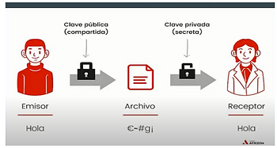
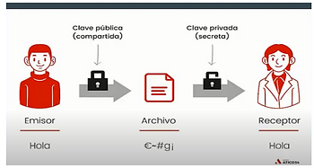

Ejemplo:
María envía su clave publica a pedro, pedro cifra
el mensaje utilizando la clave publica de maría y
pedro le envía el mensaje cifrado a maría, ella u
tiliza su clave privada para descifrar el mensaje.

El nombre RSA proviene de las iniciales de sus tres creadores, Rivest, Shamir y Adleman, allá por 1997. Se trata de un algoritmo
de cifrado asimétrico, o de clave pública, y es uno de los más utilizados en la actualidad. De hecho, la mayor parte de los sitios
web hoy integran seguridad SSL/TLS, y permiten la autenticación mediante RSA.

